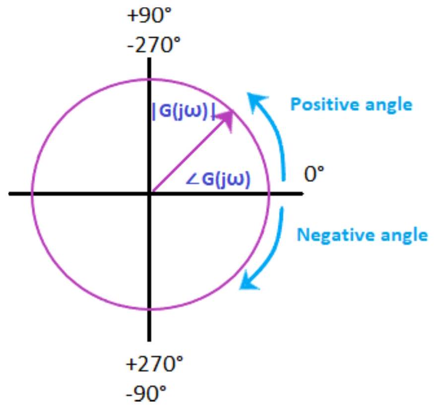

Unit-8: Frequency-Response Analysis & Bode Plot
Basic concepts of frequency response
The frequency of the input signal is varied over a specific range, and the system's output is studied. The change in the system's output response with respect to the varied input is known as the system's frequency response.
The frequency response is represented as $T(j\omega)$, and it comprises of phase function and the magnitude function. They are also known as the system's frequency response, which can be evaluated both for the open-loop and closed-loop systems.
The open-loop transfer function is given by:
$G(s) = G(j\omega)$ Where, $s = j\omega$
$|G(s)|$ or $|G(j\omega)|$ represents the magnitude of the transfer function.
$\angle G(j\omega)$ represents the phase of the transfer function.
Here, we will consider the response of the system with the input at different frequencies. The frequency response is a steady state response of the system to a sinusoidal input signal. For example, if a system has sinusoidal input, the output will also be sinusoidal. The changes can occur in the magnitude and the phase shift.
Let $G(s) = 1/(Ts + 1)$
It is the transfer function in the time-constant form. We are assuming all the parameters in the steady state.
$G(j\omega) = 1/(Tj\omega + 1)$
Let the input be $A\sin(\omega t)$.
It represents the magnitude.
The angle G(s) is given by:
The above analysis tells that the steady state output (Css) when the input was $A\sin(\omega t)$ is given by:
Advantages and Disadvantages of Frequency Response
Advantages of frequency response
The advantages of the frequency response method are as follows:
- It includes simple calculations.
- The frequency response method is easy to implement in the designs of the control system. It also helps us to find the stability of the system.
- It provides the stability analysis of the system without the need for any complex and timeconsuming processes.
- The frequency response and the step response of the system are closely related. One known parameter gives us the idea of the other parameter.
- We can obtain the frequency response of the given control system without the knowledge of the transfer function.
- The stability analysis of the system can be performed even if it incorporates moderate degree of non-linearity.
- We can also apply the frequency response on the system that has irrational transfer function. For example, $e^{-2Ts}$.
- It involves simple and inexpensive apparatus.
- In case of the complex cases of the control system, it is better to use the Nyquist plot technique. It is the only method to analyze the stability in such conditions.
- The effect of the noise disturbance can be easily analyzed.
- The adjustment and performance of the closed loop system using the frequency response is easy as compared to the time domain.
Disadvantages of frequency response
The disadvantages of the frequency response method are as follows:
- The frequency response method works better with the linear system. The result in the cases of non-linear systems or the system with moderate non-linearity does not show the exact results. Hence, it is generally applied only to linear systems.
- The practical method to obtain the frequency response is time-consuming.
- There is a relation between the frequency response and the step response, but it is not exact as expected. But, the exact relation is possible if we use the Fourier transformation to describe it, which is difficult to apply due to complex calculations.
Polar plot
The polar plot of a sinusoidal transfer function is the plot of the magnitude $G(j\omega)$ versus the phase angle of $G(j\omega)$ on the polar coordinates. The frequency in the polar plot is varied from zero to infinity. The polar plot is drawn on the polar sheet, which is the form of a graph, and the graph consists of concentric circles and radial lines.
The concentric circles on the polar sheet graph represent the magnitude, and the radial lines represent phase angles. Each point on the graph displays information about the magnitude and the phase angle.
The example of a polar graph is shown below:
The positive angle in a polar graph is measured in the anti-clockwise direction, while the negative angle is measured clockwise direction. Both the angles are measured with respect to the reference point, i.e., 0 degree axis.
The transfer function $G(j\omega)$ in the rectangular form can be written as:
$G(j\omega) = GR(j\omega) + jGI(j\omega)$
Where,
$GR(j\omega)$ is the real part of the transfer function $G(j\omega)$
$GI(j\omega)$ is the imaginary part of the transfer function $G(j\omega)$
As discussed, the angular frequency in the polar plot varies from zero to infinity. We should not get confused with the Nyquist plot, which is the extension of the polar plot. The angular frequency ($\omega$) varies from zero to infinity, while the Nyquist plot varies from a negative value of infinity to positive infinity.
The primary advantage of the polar plot is that it depicts the frequency response characteristics of a system over the entire frequency range in a single plot. Since everything seems to be a single block, it fails to show the contributions of each factor of the open-loop transfer function.
Integral and Derivative Factors
The integral factor of the polar plot is given by:
$G(s) = 1/s$
Where,
$s = j\omega$
s is the transfer function
$G(j\omega) = 1/j\omega = -j/\omega = (1/\omega) \angle -90^\circ$
It is the negative imaginary axis.
The derivative factor of the polar plot is given by:
$G(j\omega) = j\omega = \omega \angle +90^\circ$
It is the positive imaginary axis.
Effect of addition of pole and zero
- The addition of pole in the polar plot will shift its end by -90 degrees.
- The addition of zero in the polar plot will shift its end by +90 degrees.
Type and order of the system
The type of the system in the polar plot determines the quadrant at which the polar plot starts. The start of the polar plot of all poles is shown in the below diagram.
The order of the system in the polar plot determines the quadrant at which the polar plot ends. The end of the polar plot of all poles is shown in the below diagram.

Polar plot of standard transfer function
Here, we will discuss the polar plots of various standard transfer functions.
Type 0
Order: 1
Let, $G(s) = 1/(1 + sT)$
Put, $s= j\omega$
$G(j\omega) = 1/(1 + j\omega T)$
The above transfer function in the form of magnitude and angle can be represented as:
If we consider the angle part in the numerator, we need to insert a negative sign due to the transition from the denominator to the numerator or vice-versa.
Let's find the value of the above function at zero and infinity.
When, $\omega = 0$
$G(j\omega) = 1\angle 0 / \sqrt{1} = 1\angle 0$
It is because $\tan^{-1}(0) = 0$
When, $\omega = \infty$
$G(j\omega) = \frac{1 \angle -90^\circ}{\infty} = 0\angle -90^\circ$
It is because $\tan^{-1}(\infty) = 90$ degrees
The polar plot at value 0 and infinity will appear as:
Order 2:
Since, it is a 2 order system; the function includes the highest derivative variable (s) with the power 2.
Let, $G(s) = 1/[(1 + sT_1) (1 + sT_2)]$
Put, $s= j\omega$
$G(j\omega) = 1/[(1 + j\omega T_1) (1 + j\omega T_2)]$
The above transfer function in the form of magnitude and angle can be represented as:
If we consider the angle part in the numerator, we need to insert a negative sign due to the transition from the denominator to the numerator, as shown below:
Let's find the value of the above function at zero and infinity.
When, $\omega = 0$
$G(j\omega) = 1\angle (-0 - 0)/(1 \times 1) = 1\angle 0$
It is because $\tan^{-1}(0) = 0$
When, $\omega = \infty$
$G(j\omega) = 0 \angle (-90^\circ - 90^\circ)/(\infty \times \infty) = 0\angle -180^\circ$
It is because $\tan^{-1}(\infty) = 90$ degrees
The polar plot at value 0 and infinity will appear as:
Type 1
Order: 1
Let, $G(s) = 1/s$
Put, $s= j\omega$
$G(j\omega) = 1/j\omega$
$G(j\omega) = 1/(\omega\angle 90^\circ)$
If we consider the angle part in the numerator, we need to insert a negative sign due to the transition from the denominator to the numerator, as shown below:
$G(j\omega) = (1\angle -90^\circ) /\omega$
Let's find the value of the above function at zero and infinity.
When, $\omega = 0$
$G(j\omega) = \infty \angle -90^\circ$
It is because the function is directly divided by $\omega$. $1/0 = \infty$.
When, $\omega = \infty$
$G(j\omega) = 0\angle -90^\circ$
It is because the function is directly divided by $\omega$. $1/\infty = zero$.
The polar plot at value 0 and infinity will appear as:
Order: 2
Let, $G(s) = 1/[s(1 + sT)]$
Put, $s= j\omega$
$G(j\omega) = 1/ [j\omega(1 + j\omega T)]$
The above transfer function in the form of magnitude and angle can be represented as:
If we consider the angle part in the numerator, we need to insert a negative sign due to the transition from the denominator to the numerator or vice-versa.
Let's find the value of the above function at zero and infinity.
When, $\omega = 0$
$G(j\omega) =\infty \angle -90^\circ$
It is because the function is directly divided by $\omega$. $1/0 = \infty$.
$\tan^{-1}(0) = 0$
When, $\omega = \infty$
$G(j\omega) = 0\angle (-90^\circ - 90^\circ) = 0\angle -180^\circ$
It is because the function is directly divided by $\omega$. $1/\infty = zero$.
$\tan^{-1}(\infty) = 90$ degrees
The polar plot at value 0 and infinity will appear as:
Order: 3
Let, $G(s) = 1/[s(1 + sT_1) (1 + sT_2)]$
Put, $s= j\omega$
$G(j\omega) = 1/ [j\omega (1 + j\omega T_1) (1 + j\omega T_2)]$
The above transfer function in the form of magnitude and angle can be represented as:
If we consider the angle part in the numerator, we need to insert a negative sign due to the transition from the denominator to the numerator, as shown below:
Let's find the value of the above function at zero and infinity.
When, $\omega = 0$
$G(j\omega) =\infty \angle -90^\circ$
It is because the function is directly divided by $\omega$. $1/0 = \infty$.
$\tan^{-1}(0) = 0$
When, $\omega = \infty$
$G(j\omega) = 0\angle (-90^\circ - 90^\circ - 90^\circ) = 0\angle -270^\circ$
It is because the function is directly divided by $\omega$. $1/\infty = zero$.
$\tan^{-1}(\infty) = 90$ degrees
The polar plot at value 0 and infinity will appear as:
Type 2
Order: 4
Let, $G(s) = 1/[s^2(1 + sT_1) (1 + sT_2)]$
Put, $s= j\omega$
$G(j\omega) = 1/ [j^2 \omega^2 (1 + j\omega T_1) (1 + j\omega T_2)]$
The above transfer function in the form of magnitude and angle can be represented as:
If we consider the angle part in the numerator, we need to insert a negative sign due to the transition from the denominator to the numerator, as shown below:
Let's find the value of the above function at zero and infinity.
When, $\omega = 0$
$G(j\omega) = \infty \angle (-180^\circ - 0 - 0)/(1\times 1) = \infty \angle -180^\circ$
It is because the function is directly divided by $\omega^2$. $1/0$ is equal to infinity.
$\tan^{-1}(0) = 0$
When, $\omega = \infty$
$G(j\omega) = 0\angle (-180^\circ - 90^\circ - 90^\circ)/(\infty \times \infty) = 0\angle -360^\circ$
It is because the function is directly divided by $\omega^2$. $1/\infty$ is equal to zero.
$\tan^{-1}(\infty) = 90$ degrees
The polar plot at value 0 and infinity will appear as: